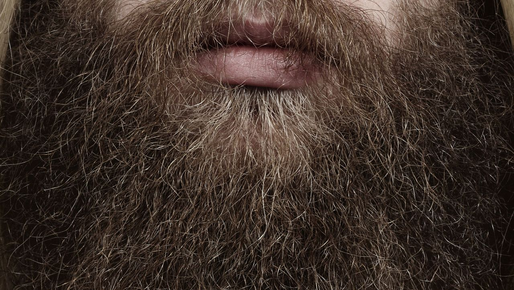

Welcome to Natürliche Gesundheit
Männerhygiene
2020.12.21 18:36Deutsch English Portuguese Spanish Turkish
Bulgarian Romanian Arabic Farsi French
Männerhygiene
Die Intimpflege des Mannes
Männer betreiben Intimpflege am besten unter fließendem Wasser in der Dusche. Dabei ist vor allem das Smegma an der Eichel und unter der zurückgeschobenen Vorhaut täglich abzuwaschen. Smegma ist eine helle, fetthaltige Substanz, bestehend aus Absonderungen von Talgdrüsen, Hautschüppchen und Bakterien. Wird es nicht entfernt, kann es Entzündungen hervorrufen sowie das Risiko für Peniskrebs erhöhen.
Das ideale Waschgel für die Intimpflege ist:
Hoden und After werden anschließend gereinigt und vorsichtig mit einem weichen und frischen Handtuch abgetrocknet.
Krankheiten/Infektionen
Der wichtigste Schritt bei der richtigen Intimhygiene ist die Reinigung um und unter der Vorhaut unbeschnittener Männer. Die Vorhaut wird vorsichtig zurückgeschoben. Ist das nicht schmerzfrei möglich, liegt u.U. eine Vorhautverengung (Phimose) vor. In diesem Fall ist eine medizinische Beratung und Untersuchung erforderlich.
Wenn Sie trotz guter Intimpflege Hautveränderungen bemerken, eine verstärkte Sekretion aus der Harnröhre feststellen, Juckreiz verspüren oder unangenehm riechen, ist eine ärztliche Abklärung notwendig, um sexuell übertragbare Infektionen (STI), andere Infektionen und Erkrankungen ausschließen zu können. Dies gilt auch für alle Veränderungen am Hoden und im Analbereich.
Hepatitis-A/B-Schutzimpfung
Für Personen mit einem Sexualverhalten mit hoher Infektionsgefährdung wird eine Hepatitis-A/B-Impfung empfohlen, die in diesem Fall kostenfrei als Indikationsimpfung durchgeführt werden kann.
Das Hepatitis-A-Virus kann auch bei ausreichender Hygiene übertragen werden, da durch Sexualpraktiken wie dem Lecken im Analbereich (Anilingus/engl. rimming) eine Ansteckung möglich ist.
Toilette
Weiches Toilettenpapier gehört zur Intimpflege und schont die Haut im Intimbereich und um den Anus. Beim Kauf ist darauf zu achten, dass die Produkte keine Bleichmittel oder Duftstoffe enthalten, da diese zu Reizungen oder Allergien führen können.
Kleidung
Die täglich zu wechselnde Unterwäsche sollte bei 60°C waschbar sein und einen hohen Anteil an Naturfasern enthalten, um Schweiß aufzunehmen und die Haut atmen zu lassen.
Unterwäsche aus Kunststofffasern führt zur Bildung einer „feuchten Kammer“, die die Ausbreitung von Keimen fördert.
Intimrasur
Für viele Männer gehört das Rasieren der Schamhaare zur täglichen Pflege. Bei der von vielen Männern bevorzugten Nassrasur im Intimbereich können kleine Verletzungen entstehen, die zu behandlungsbedürftigen Entzündungen führen können.
Um dies zu vermeiden, ist es sicherer, die Behaarung des Intimbereichs lediglich mit einem elektrischen Trimmer zu stutzen.
Trockenrasur und Enthaarungsgels reizen die Haarwurzeln und können dadurch zu Entzündungen führen.
Intim-Piercings
Intim-Piercings können sich entzünden, wenn sie unter unhygienischen Umständen gestochen oder anschließend nicht richtig gereinigt und desinfiziert werden. Die Wahl eines seriösen Piercing-Studios und das exakte Einhalten der Pflege-/Desinfektions-Anleitung kann das Infektionsrisiko gering halten.
Auch später bedürfen Intim-Piercings ständiger Beobachtung und Pflege. Rötungen, Schwellungen und Schmerzen müssen ärztlich abgeklärt werden und können als Eintrittspforten für Erreger von STI dienen.
Je nach Art des Intimpiercings kann der Gebrauch von Kondomen erschwert sein. Das Kondom kann leichter beschädigt werden.
Analspülung
Vor dem Analverkehr nehmen die meisten Männer eine Analspülung vor.
Zur Analspülung können Analballon, Klistier, Darmrohr oder ein Duschaufsatz verwendet werden. Es ist darauf zu achten, dass das Wasser körperwarm und der Wasserdruck nicht zu stark ist. Wegen der hohen Verletzlichkeit der Darmschleimhaut ist ein vorsichtiges Vorgehen wichtig. Die Verwendung von scharfkantigen Materialien ist unbedingt zu vermeiden.
Das Material ist nur von einer Person zu benutzen. Wiederverwendbare Materialien sind vor jeder erneuten Benutzung unbedingt zu desinfizieren.
Gut zu wissen
Die AIDS-/STI-Beratungsstellen der Gesundheitsämter in NRW bieten anonyme und kostenlose Beratung zu allen sexuell übertragbaren Infektionen an.
Weitere Informationen zu Intimhygiene und anderen Themen unter
www.heinfiete.de - Poschüre
Eine Seite zurück
Startseite | HIV-Übertragung | Test-Zeitpunkt | Testangebot | Beratungstellen | Infos zu HIV/AIDS & STI | PEP & PrEP | Hygiene | Impressum | Datenschutzerklärung
WIE AUCH IMMER
Deutsch English Portuguese Spanish TurkishBulgarian Romanian Arabic Farsi French
zur normalen Ansicht
